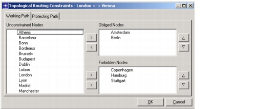

Routing > Topological Routing Constraints
Topological Routing Constraints
In some cases, you might want to define topology constraints that are considered during a network design action such as routing, grooming, or dimensioning. For example, you might want to specify constraints that force grooming to occur at specific locations (such as hub locations) other than those that SP Guru Transport Planner might consider ideal; meanwhile, the unconstrained section of a route can still be optimized.
These constraints are specified as nodes that should or should not be used by a routed connection. You can define topology constraints for one connection or a group of connections that originate from the same node. The topology constraints can be different for the working and protection path of a connection. The constraints can include both "obliged" nodes that must be in the route and "forbidden" nodes that may not be in the route.
There are two methods for specifying topological restraints:
- Import the constraints from a data file. The data-file format is described in Topology Constraints Data Files; the procedure for importing the data is described in Procedure 5-1-Importing Network Data into a Project.
- Specify constraints for individual connections in the Connection Browser, as described in Procedure 6-5.
Procedure 6-5 Specifying Topology Constraints for a Connection
- Open the DCL Connection Browser: choose Network > Connection Browser and click the DCL button (under "Traffic").
- Right-click on a DCL connection and choose "Topological Constraints..." from the right-click menu.
The Topological Constraints dialog box (Figure 6-13) appears.
Figure 6-13 "Topological Routing Constraints - <Connection>" Dialog Box

- Specify the obliged and forbidden nodes for the working path: select nodes in the Unconstrained Nodes (left pane) and use the > buttons to set them as Obliged Nodes or Forbidden Nodes.
Note—You must specify the obliged nodes in the correct sequence. This is the sequence in which the nodes should occur in the path. You can change the sequence using the up and down arrows. The sequence is not import for Forbidden Nodes.
You can remove nodes from the Obliged Nodes or Forbidden Nodes list using the < buttons.
You cannot add the same node to both the Obliged Nodes and Forbidden Nodes.
- Click the "Protection Path" tab and set the topological constraints for the protection path using the same method described in step 3.
- Click OK to confirm the topological constraints and close the dialog box.
End of Procedure 6-5
| Home © 1987-2007 OPNET Technologies, Inc. All Rights Reserved. This software may be covered by one or more U.S. Patents. See complete patent notice in the Legal Notices section. OPNET Support Center |